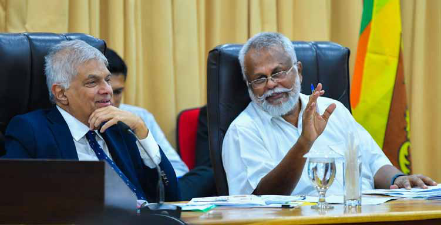
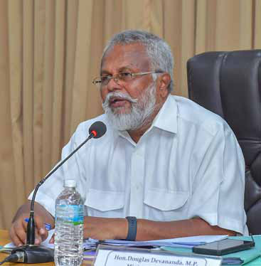
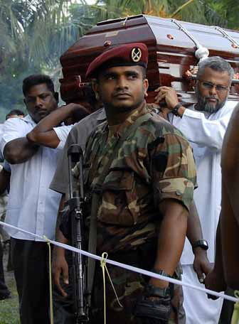
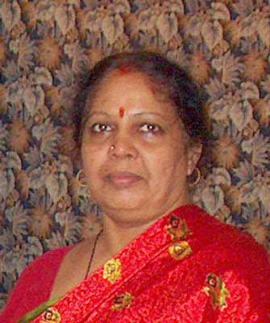
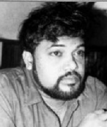
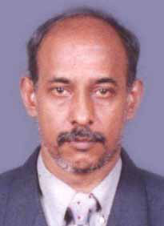
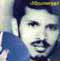

Let the People Decide My Political Journey:
Let the People Decide My Political Journey:
Jaffna Monitor hellojaffnamonitor@gmail.com 4 Interview Let the People Decide My Political Journey: Exclusive Interview with Minister Douglas Devananda Douglas Devananda, the Minister of Fisheries and the only cabinet minister representing the Northern Tamils, recently did an in-depth interview wi th our reporter, David Ignatius. Here, we present this exclusive conversation. You organized President Ranil's visit to the Northern Province. Was the visit successful? The visit was undeniably successful. President Ranil's four- day stay in Jaffna included meetings with diverse groups. He BY: David Ignatius Fisheries Minister Douglas Devananda along with President Ranil Wickremesinghe, pictured during the President's recent visit to Jaffna.

Jaffna Monitor hellojaffnamonitor@gmail.com 5 pledged to allocate funds specifically for improving the region's education, healthcare, development, and employment prospects. This allowed various stakeholders direct access to the President, allowing them to express their concerns and proposals. President expressed his disappointment over the failure to utilize the available political solutions. He also mentioned that the government would not obstruct the implementation of the 13th Amendment to the Constitution. Overall, he considered this visit to be successful. There are accusations against you for not advocating Tamil nationalistic policies. What is your response? There seems to be a deliberate narrative being spun to portray me as anti-Tamil nationalism. However, like cholesterol, which is categorized into 'good' and 'bad' types, Tamil nationalism also has its positive and negative aspects. Good cholesterol can benefit human health, whereas bad cholesterol can lead to death. Similarly, positive Tamil Tesiyam (Tamil nationalism) can undoubtedly benefit Sri Lankan Tamils. On the other hand, negative Tamil Desiyam, exploited by some Sri Lankan Tamil parties, instigates innocent Tamils without offering practical solutions akin to harmful cholesterol. I support and advocate for positive Tamil nationalistic policies, but I am firmly against negative Tamil nationalism. This stance does not mean I oppose Tamil nationalism entirely. Organizations like the Tamil National Alliance and Tamil National People's Front often instigate innocent people and the younger generation without guiding them towards a concrete resolution. This, in my view, represents 'bad Tamil nationalism.' I consciously choose not to engage in such practices. Instead, my efforts are directed towards improving infrastructure in the North and East, enhancing the quality of life for the people, and providing employment opportunities to young men and women. In recent years, I've successfully secured jobs for several thousand individuals in the North and East. This initiative has significantly reduced their need to migrate abroad in search of employment. Had I not facilitated these job opportunities, many might have migrated overseas, potentially leading to a further exodus from the North and East, including those marrying the young diaspora. Preserving the existence of the Eelam Tamil community and planning for our future is a more pragmatic approach, rather than pushing our younger generation to migrate. Recently, residents from the Vasavilan area, partially located within a high-security zone, approached me for assistance in releasing a temple. I assured them of my help and explained that with their support, through their votes and additional parliamentary seats, I could serve them more effectively. When one individual questioned how I could

Jaffna Monitor hellojaffnamonitor@gmail.com 6 expect people to vote for me and what I had done against the government, I replied, 'If that's your perspective, you have come to the wrong person. You should be taking your concerns to those who consistently oppose the government. You come to me because, deep down, you know I am capable of bringing about positive change.' He had no response to this. Many Tamil parties use Tamil nationalism merely as an election slogan. However, I hold it as a deep-seated belief. What is your stance on the 13th Amendment? The issue of rights for the Tamil people should have been resolved by signing the India-Sri Lanka accord. At that juncture, approximately 651 LTTE members and a total of around 2,000 individuals, including other members from the liberation organizations and the general public, had perished. However, the failure to capitalize on this opportunity led to the indiscriminate loss of many thousands more lives until the conflict's culmination in Mullivaikkal in 2009. The crux of the error lies in the Tamil leadership's inability to utilize the chance they were given. This is the stance we maintain. My stance on the 13th Amendment is clear: I've never viewed it as the final resolution for the Tamil people in Sri Lanka. Instead, it should be approached as a starting point. Tamil political parties must develop a strategic plan that acknowledges the 13th Amendment as a foundational element while striving to extend rights beyond its current scope. This approach is essential for progress towards a more comprehensive resolution that better addresses the aspirations and needs of the Tamil community. I have developed such a plan. The critical question remains: do the parties opposing the 13th Amendment offer any practical, achievable strategies to secure political rights for the Tamil community? All parties, fearing Prabhakaran, opposed the 13th Amendment when it was introduced. Tamil National Alliance (TNA) declared they wouldn't even touch it with a broomstick. Now, the shift in their perception is evident as they have come to accept the 13th Amendment. Yet, like the party of Gajendrakumar, Tamil National People's Front, those who still refuse to accept it and label its supporters as traitors, what solution do they offer for the Tamil people? It's nothing but incendiary politics, misleading the people with bad Tamil nationalism. that misleads the public through rhetoric rather than truth. Such politics merely contribute to confusion and false hope. What we are observing is mere political maneuvering. This version of Tamil nationalism is harmful; it neither presents the truth nor properly leads the people. It's characterized by spreading misinformation. Contrasting this approach of empty promises, it's imperative to ask: What definitive action plan does the Tamil National People's Front have to secure and enhance the political rights of the Sri Lankan Tamil people? Moving beyond mere rhetoric to focus on realistic and actionable strategies is crucial for truly serving the community's best interests. The party of Gajendrakumar, which advocates for 'one country, two nations,' ironically starts with 'All-Ceylon.' Both MPs from his party, Benz Gajendrakumar and 'Kai Pillai' S. Kajendran, have accepted Sri Lanka as one nation by swearing in as MPs and abiding by its constitutional framework. Why this double standard? They accept Sri Lanka as their country to enjoy parliamentary privileges, and their party lawyers earn substantial fees in courts accepting Sri Lanka as one country. Is this fair?
Jaffna Monitor hellojaffnamonitor@gmail.com 7 Could you elaborate on the fundamental ideological differences you had with Velupillai Prabhakaran? I cannot fathom, even in my wildest dreams, the idea of killing a friend who once shared the same mat with me. Yet, Prabhakaran did precisely that. My fundamental disagreement with Prabhakaran has always been profound, especially regarding his violent tactics. He orchestrated the killings within other militant groups, a kind of fratricide. During my time in Chennai in the late 1980s, Prabhakaran sent his close aide, Shankar, alias Sornalingam, who later became a prominent LTTE member, to persuade me to join their ranks. I told Shankar to convey a message to Prabhakaran: he must first put an end to the sibling killings. I emphasized to Shankar that liberation movements should cease three types of violence: internal killings within the militant organizations, fratricidal killings between different militant groups, and the killing of members of the Tamil community who hold differing opinions. Prabhakaran attempted to assassinate me at least a dozen times, but each attempt failed miserably. When I returned to Sri Lanka from India in 1990, despite warnings from everyone about the high risk of Prabhakaran succeeding in killing me, I remained confident that he could not. A leader must be able to protect people and his organization. Prabhakaran lacked both of these qualities. I am wholly opposed to Prabhakaran's destructive political methods. I harbor no doubts about Prabhakaran being a Venomous animal. In the final stages of the war, Prabhakaran resorted to using thousands of innocent Tamil civilians as human shields, a strategy aimed at his own protection. Although I cannot delve deeper into the details, it is undeniable that the circumstances surrounding his end at Mullivaikkal were deeply shameful. But I distinguish between LTTE fighters and their leadership. I hold no anger against them. This includes the suicide bombers who came to kill me and other LTTE fighters. I even forgave Sathiyaleela, who brought a suicide bomber to my office. I openly stated in court that I had no objections to releasing Sathiyaleela and would discuss her release with the law minister. This was also raised when President Ranil Wickremesinghe visited Jaffna, and I reiterated my stance. I don't have any personal hatred towards LTTE fighters. Many former fighters and LTTE members now work with me. A key figure from the LTTE's 'Voice of Tigers' radio station now works with me. It's not fair to interpret my opposition to Prabhakaran's brutal politics and fratricidal killings as criticism of the LTTE fighters who were tragically brainwashed by the LTTE. You called Selvarajah Kajendran, a member of the National List of the Tamil National People's Front, 'Kaipillai,' and it has become the headlines of the newspapers...? During his tenure as the leader of the Jaffna University Student Union, Selvarajah Kajendran faced accusations from the parents of numerous innocent students. They claimed he incited and forcibly sent hundreds of students to join the Tigers. Tragically, many of these students reportedly lost their lives. These grieving parents came to me, sharing their anguish over this situation. Since joining the Tamil National Alliance with the LTTE's backing, Selvarajah Kajendran has perpetuated provocative politics. Notably, in
Jaffna Monitor hellojaffnamonitor@gmail.com 8 a 2002 parliamentary speech, he alarmingly stated, 'Prepare 40,000 coffins; we will return 40,000 Sinhalese soldiers as corpses from Jaffna.' This incendiary remark significantly angered the Sinhalese community and exacerbated Sinhalese-Tamil tensions. In 2008, at the war's peak, He reportedly fled to a European country, sought asylum, and got married there. Post-war, he allegedly returned to Sri Lanka following a purported deal with then-Defense Secretary Gotabaya Rajapaksa. Before he departed from the country, he was reportedly approached by Kutti, responsible for vehicles within the LTTE, regarding the car allotted to him by the Parliament. Allegedly, Kajendran informed Kutti that releasing the car required a payment of Rs. 4 million. It is claimed by credible sources that Kutti, using LTTE funds, provided this amount to Kajendran, who then secured the vehicle and kept it safe before leaving for abroad. Subsequently, during the height of the war and after marrying overseas, he is said to have bought land and constructed a house in Manaltharai Lane, Jaffna, where he now resides comfortably. Kajendran organized a procession from Pothuvil in the Eastern Province to Jaffna to pay tribute to Thileepan. This procession was intercepted and attacked by Sinhalese people at Kappalthurai, Trincomalee. The video of the attack shows him, terrified by the assault, fleeing like a coward without fighting back. While I don't justify the attack, he, who often incites others with brave rhetoric, should have confronted the attack directly. In 1983, I was attacked by Sinhalese thugs in Welikada Prison. My comrades and I confronted the attack with the moderate weapons we had. Similarly, in 1998, in Kalutara Prison, I was attacked by Tamil thugs suspected of being Tigers. I fought back using my bare hands as weapons. In both situations, I didn't run away like a coward. While I condemn the attack on Kajendran, I firmly believe that his act of running away like a coward is disgraceful. That's why I refer to him as 'Kaipillai' Kajendran. Kajendran's actions sometimes remind us of the famous comedy actor Vadivelu's legendary character 'Kaipillai.' In this role, Kaipillai pretends to be brave in public, but in reality, he is very much scared. This similarity is why I draw the comparison. You were pretty critical of Gajendrakumar Ponnambalam regarding the murder of his father, Kumar Ponnambalam. Could you elaborate on that? Gajendrakumar Ponnambalam's father, Kumar Ponnambalam, was a friend of mine. He led a life of luxury in central Colombo, and his residence's yard was consistently filled with numerous Benz cars. Once, in a lighter vein, I suggested that he could sell one of those Benz cars to aid thousands of Tamil people. He responded, 'I say, that's a separate issue; politics is different. In 1998, I survived a narrow brush with death when I was attacked by the Tigers in Kalutara prison. When I returned from the hospital, Kumar Ponnambalam and his son, Gajendrakumar, visited my house. During that visit, Kumar admonished me, questioning, 'Don't you know they (the Tigers) are murderers? Why did you go to see them? We knew something like this would happen. That's precisely why we never visit the Tigers in prison.' Gajendrakumar cannot deny that this incident took place.
Jaffna Monitor hellojaffnamonitor@gmail.com 9 Visibly shattered Douglas Devanada carrying the coffin of his advisor and human rights activist Maheswari Velautham, who was shot dead by LTTE gunmen on 13 May 2008 near Nelliyadi in Vadamaraadchi, Jaffna.

Jaffna Monitor hellojaffnamonitor@gmail.com 10 Maheswari Velautham Atputharajah Nadarajah Balanadarajah Iyer I was deeply saddened upon learning of Kumar Ponnambalam's murder. It was a tragic event, which I have consistently and vehemently condemned from that day to the present. However, Gajendrakumar has never initiated any legal proceedings concerning his father's murder. He has avoided this because a thorough investigation might unveil the identity of the murderer, potentially jeopardizing Gajendrakumar Ponnambalam's political career. I believe the fear that such an investigation could label him as the son of a traitor, in the LTTE supporters's view, is the primary reason Gajendrakumar has refrained from pursuing any legal action regarding his father's murder. The struggle of the relatives of those who disappeared due to the war still continues... Among the Tamil politicians in the North, I am the one who fully understands the pain of the families of the disappeared, as I am also one of them. This is because my brother, Premananda, was abducted by the LTTE and subsequently disappeared. (He takes a small pocket diary from his shirt pocket and shows a news clipping about his younger brother Premananda's disappearance.) In this way, I, too, belong to the category of relatives of the disappeared. My mother, Maheswari, passed away when we were children, and we were raised by our father, Kathiravelu, and his sister, Parameswari. When they learned that my brother Premananda had been abducted and disappeared by the Tigers, they were inconsolable, like a cow that had lost its calf. Holding onto the hope that Premananda was still alive, my father, foster mother, and other siblings often discussed this with me. They pleaded with me to search for Premananda. However, knowing the nature of the LTTE leadership, I was aware that Premananda had been killed by the Tigers. But, out of respect for their feelings, I never disclosed to them my belief that Premananda could have been killed by the Tigers. My father and foster mother passed away without knowing the truth about what happened to Premananda. Not only my own brother but also many of my close comrades, including Maheswari Velautham, a human rights lawyer; Atputharajah Nadarajah, the founding editor of the magazine Thinamurasu; and Balanadarajah Iyer, editor of Thinamurasu, were killed by the LTTE.



Jaffna Monitor hellojaffnamonitor@gmail.com 11 In this way, I can fully empathize with the feelings of the relatives of the disappeared. Many of these relatives have approached me, seeking justice. To them, I say, I am one of you. I am not unaware of the pain and suffering endured by the families of the disappeared. We must seek a resolution for their tears. This issue should not be exploited for political purposes; instead, we must strive to find a just solution. Considering the long-standing issue of Indian fishermen violating the maritime boundary, what comprehensive plan do you propose to effectively put a full stop to this persistent problem? The Sri Lankan government is proactively engaged in discussions with New Delhi to address the activities of Indian fishermen who violate the maritime boundary. These fishermen should be apprehended without exception. Moreover, it's imperative that the nine Members of Parliament from the Northern Province visit Tamil Nadu and Puducherry to converse with Chief Ministers M.K. Stalin and N. Rangasamy. Their meetings should also extend to local Tamil political leaders to accurately convey the situation. Such measures could significantly diminish the problem. Similarly, fishermen associations from the Northern Province need to visit these regions to present the actual circumstances. Countering the misleading narrative that Indian fishermen are merely continuing ancient practices without infringing on maritime borders and that the Sri Lankan navy is disturbing them is crucial. Nine Members of Parliament from the Northern Province, along with fishermen's associations from the same area, should clearly communicate to our brethren in Tamil Nadu and Puducherry that Indian fishermen, by crossing borders and engaging in bottom trawling within Sri Lanka's maritime territory, are causing significant harm to marine resources. This practice leads to the deterioration of the sea bed. Such activities not only negatively impact the ecosystem but also affect the livelihoods of the local population. Furthermore, these practices cause damage to the marine equipment of northern Tamil fishermen, resulting in substantial livelihood losses for these individuals. Premananda

Jaffna Monitor hellojaffnamonitor@gmail.com 12 The current scenario is markedly different from the wartime environment. The Sri Lankan Navy faces challenges in apprehending these fishermen due to the overwhelming number of Indian fishing boats and the impracticality of using firearms, as was previously done. Maritime arrests are notably more complex than terrestrial ones. However, due to my firm stance, the Navy has begun making arrests. I have urged Northern Parliamentarians from various parties to collaboratively address this issue, yet the response has been underwhelming. Recently, Tamil National Alliance (TNA) MPs Siddharthan and Selvam Adaikalanathan have agreed to participate in these efforts. If all nine parliamentarians, irrespective of their party affiliations, come together and make a concerted effort by visiting India, it could potentially resolve approximately 70% of the issues our fishermen face. This issue is a matter of public concern, not a personal one. Hence, politicians must set aside party divisions and individual ambitions to work collaboratively on this pressing matter. You've mentioned the possibility of retiring from politics, particularly with the upcoming election potentially being your last. Is this indeed your plan, and if so, what factors have led to this decision? Recently, there has been speculation about my retirement from politics, and it's true that I've considered it, especially now that I'm 67 years old. My life has been wholly dedicated to the welfare of the Tamil people. I remain active in politics primarily because I feel a profound responsibility, being one of the few who initiated the armed struggle. This commitment is the driving force behind my political journey. Abandoning my people is not an option for me; doing so would weigh heavily on my conscience and disrupt my peace. When I decided to return to Sri Lanka from India, numerous friends and relatives strongly advised against it. They warned of the significant dangers I would face, even going so far as to say that Prabhakaran would target me. Despite these warnings, I was driven by an overwhelming sense of duty towards our people. The option to settle in India or another foreign country, where many of my relatives live, and lead a comfortable life was available to me. However, such a path held no appeal. I sensed a significant gap in the Tamil leadership, a vacuum that I felt compelled to fill. My return was more than a mere decision; it was a calling, a responsibility I felt deeply obligated to undertake for the advancement and welfare of our people. To date, My routine is rigorous. I usually retire to bed by 10 or 10:30 at night and rise at 3 am. In my Jaffna office, I don't even have a bed; I often rest right here, adjusting myself amidst the files (pointing to a long desk in front of him). Personal comfort and possessions have never been my priority; I have never built anything for my sole benefit, and I have no family. The party is my family, and ultimately, the support of the Tamil people will bolster my political strength. Such political strength is crucial for my approach to national reconciliation to be fully successful. Without political power, achieving significant goals is impossible, and I aim to accomplish everything that is needed. Therefore, the decision of whether I should continue in politics or not should rightly rest with the people.